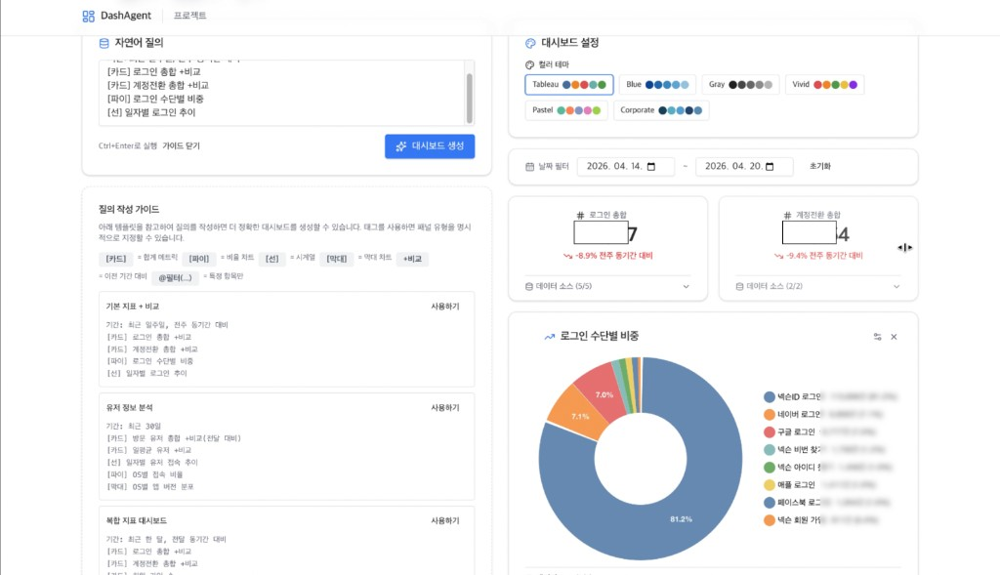
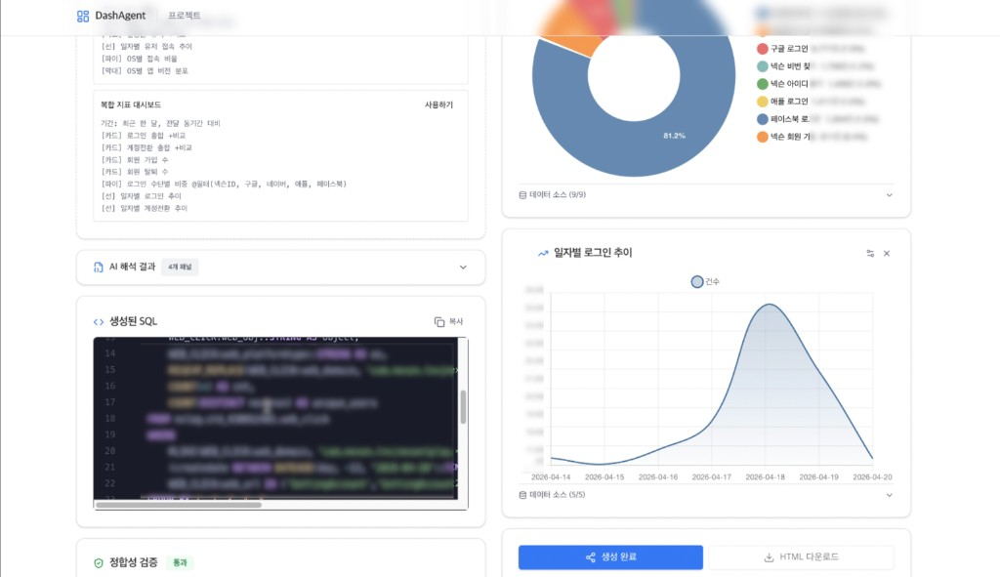

DashAgent · 자연어 → SQL 자율 분석 에이전트
데이터는 넘쳐나지만, 인사이트를 얻기까지의 과정은 여전히 복잡하고 느립니다.
- SQL 의존성 — 복잡한 SQL 문법과 스키마 이해 필수 → 비개발 직군이 독립적으로 데이터를 탐색하기 어려움
- 반복 요청 병목 — 단순 조회·시각화 요청도 데이터 엔지니어를 거쳐 분석 리드타임·업무 부하 증가
- 시맨틱 갭 — 시스템 ID(SettingLogin)와 실제 화면명(로그인 설정) 사이의 괴리로 별도 컨텍스트 필요
"SQL 없이, 누구나, 자연어로 데이터 인사이트를 만든다."
LLM 기반 자율형 데이터 분석 에이전트로 Efficiency · Intelligence · Simplicity · Interactivity · Security 다섯 가지 핵심 가치 달성.


EFFICIENCY
일별 GROUP BY 집계로 성능 최적화 · 데이터 과부하 방지
INTELLIGENCE
자연어 → DashboardSpec → SQL 2단계 파이프라인 + 시맨틱 딕셔너리 기반 한글 라벨링
SIMPLICITY
SQL 없이 만드는 인사이트 — "대시보드 생성" 단일 버튼
INTERACTIVITY
PowerBI 스타일 인터랙티브 편집 · 날짜 필터 · PoP 비교(WoW/MoM/YoY)
SECURITY
스키마 마스킹으로 실 식별자를 외부 LLM에 미전송
BACKEND
FastAPI (uv · uvicorn) · SQLite(aiosqlite) · Snowflake Connector + MCP · 싱글톤 연결 + 세션 keep-alive · 인메모리 5분 TTL 캐싱
FRONTEND
React + TypeScript + Vite · shadcn/ui (Tailwind) · Chart.js + react-chartjs-2 · @dnd-kit · react-router-dom
LLM
Groq API (OpenAI 호환) · 기본 llama-3.3-70b-versatile · 폴백 llama-4-scout-17b · 2회 지수 백오프 재시도
AI LAB 핵심 기획 의사결정 & AI 워크플로우
DashAgent는 단순 "Text-to-SQL 래퍼"가 아닙니다. 사용자 의도의 일관된 통제, 보안, 정합성, 운영 효율을 동시에 잡기 위해 설계 단계에서 다음 의사결정을 했습니다.
2단계 LLM 파이프라인
자연어를 바로 SQL로 보내지 않고 구조화된 DashboardSpec(period, comparison_mode, panes[])으로 1차 파싱한 뒤, 그 스펙으로 2차 SQL을 생성합니다. 이렇게 하면 PM이 "어떤 기간 / 어떤 비교 / 어떤 패널"인지를 일관된 명세로 통제할 수 있고, 같은 자연어라도 매번 동일한 결과를 보장하게 됩니다.
시맨틱 딕셔너리 RAG
회사 도메인 용어(예: "로그인 설정 화면" → SettingLogin)를 사용자가 엑셀로 업로드하고 DB에 적재해 Stage 1의 컨텍스트로 주입합니다. 사전에 없는 viewID / object는 프롬프트 오염 방지를 위해 sanitize하고, Unknown 항목은 별도 노출하여 사용자 라벨링을 유도합니다.
스키마 마스킹 보안
LLM에 절대 실제 DB · 테이블 · 컬럼명이 전송되지 않습니다. 마스킹된 별칭(예: analytics_db.event_log ↔ nxlog.std_4300xxxxx)으로만 통신하고, 백엔드에서 로컬 역치환 후 실행합니다.
정합성 검증 체계 (Pre / Post)
Pre — GROUP BY 강제, COUNT 강제, LIMIT 금지, 허용 테이블만 접근, DML/DDL 차단. Post — 날짜 범위 일치, 이상치(평균 대비 ±10%·500%) 경고, 중복 키 검출, 교차 합계 검증. 결과는 프론트엔드 "정합성 검증" 패널에 색상 뱃지(오류·경고·정보·통과)로 노출됩니다.
- 명세부터 자체 작성 — DashAgent의 PRD, Wireframe PRD, Query Generation Rules & Semantic Dictionary 등 5개의 명세 문서를 직접 작성하고, SpecKit을 통해 하네스 엔지니어링을 수행했습니다. "의도를 흔들림 없이 글로 옮기는 능력"은 LLM 시대에 더욱 중요해지는 기획자의 자산이라고 생각합니다.
- PRD → 코드 합치기 — Cursor를 활용해 PRD를 그대로 구현 코드로 합치는 풀사이클을 운영. 기획서가 곧 사양 · 테스트 케이스가 되도록 작성합니다.
- 정책 = 프롬프트 — "LIMIT 금지", "일별 GROUP BY 강제", "userinfo는 GROUP BY 1, 4, 5만 허용" 같은 운영 정책을 프롬프트와 후처리 로직 양쪽에 복합 강제해, LLM의 비결정성을 제품 품질로 흡수합니다.
- 셀프서비스 지향 — 데이터 분석을 "요청 → 처리 → 회신"에서 "팀이 직접 묻고 답을 가져가는 셀프서비스"로 전환하는 것이 본 프로덕트의 비전입니다. 기획자가 만드는 AI는 도구가 아니라 일하는 방식의 변화여야 한다고 생각합니다.
AI 시대의 기획자에게 필요한 건, 의도를 명확한 명세로 옮기고 AI의 불확실성을 신뢰할 수 있는 구조로 다듬는 능력이라고 생각합니다.